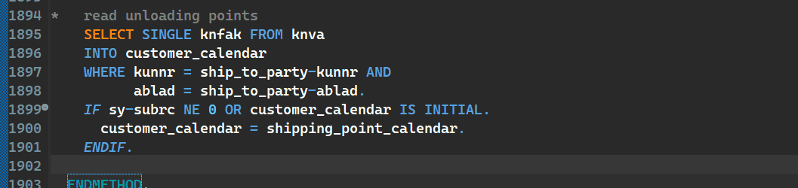

ABAP Quick Fixes - Replace Logical Operators
If you follow the guidelines for the clean ABAP, then you would probably replace all the logical operators like EQ, NE, etc. to = or <>.
This quick fix does it for you.
Works for: EQ, NE, GT, LT, GE, LE
